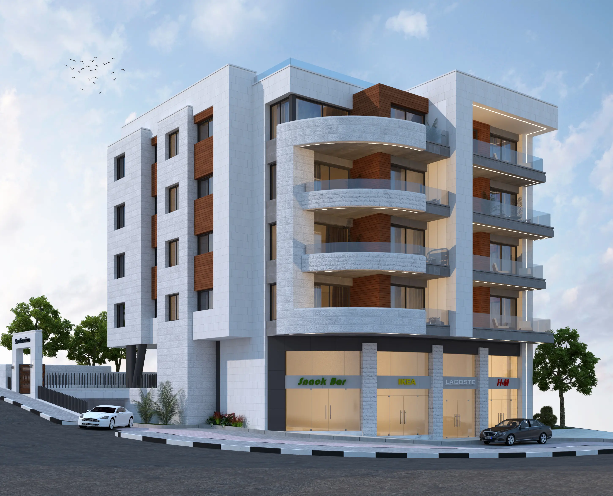

San Fransisco 2025سان فرانسيسكو
Al-Tireh, Palestine
The San Fransisco building in Al-Tireh stacks three floors of apartments over a glazed commercial ground floor, keeping the structural transfer level between them visible rather than hidden, with deep residential balconies that double as sun-shading for the units below.
Commercial - Residential